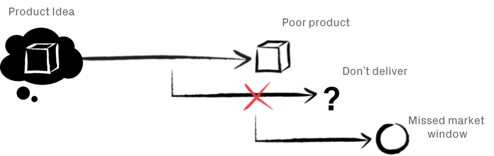

In the process of securing funding, many companies set an aggressive schedule for developing their product. Often, this schedule is shared with VCs and customers, and high expectations are inadvertently set around when the product might come to market. Unfortunately, due to a variety of reasons, many companies end up in a position where they struggle to ship their product on time, if at all.
After working with few hardware and software companies & startups i’ve found that the secret to building the right product and getting it to market is to align on the basic, key features your product must have, and then rigorously testing each feature, one by one. Below are a few questions to help determine if you are likely to hit your schedule, or if you’re headed down a painful road of delays and setbacks:
- Do you have a clear question to answer for each major design-prototype-build round?
Development plans should have a structure that looks something like this:
- Architecture
- Benchtop prototype
- Integrated prototype 1 (EVT1)
- Integrated prototype 2 (EVT2)
- Design Verification Testing (DVT)
- Production Validation Testing (PVT)
While this could be fine for your development, teams often fall into the trap of thinking about what they’re trying to build, instead of what they’re trying to learn.
For instance, let’s say we were building a product called the FruitMeter that can measure the sweetness of fruit using a novel sugar sensor. A team that’s oriented towards writing software may say something like, “we have a sensor, let’s build custom electronics to hook it up to a microprocessor with Bluetooth and show the sugar levels on a phone.”
However, what if the key risk is how you handle the sample of fruit in a way that doesn’t contaminate the sensor over time? In that case, you are better off prototyping how to take samples from fruit and effective cleaning between samples.
If a team is only thinking about building and not learning, the prototypes will not mitigate key risks. In addition, certain risks are more important than others. Explicitly calling out what you’re trying to learn is one step, the next is to make sure the schedule and prototypes are ranking those risks correctly.
- Are there objectively verifiable success or failure criteria based on user needs?
Another mistake is not setting clear criteria for success and failure during the prototyping and testing phase. Without doing this, your team risks building a prototype that yields few (if any) helpful insights.
For instance, in the case of the FruitMeter, how would you define the success criteria for how resilient the sensor is to getting contaminated? A bad criterion is to tell the engineering team: “the sensor has to be resilient to getting contaminated.” Far too many teams are operating with requirements like this.
A better approach would be to run some financial models or user tests that show the value of performing 100 readings before servicing the device. Then the team can be told that the “device has to function for at least 100 samples of fruit.”
An even better approach would be to define real life scenarios with your target customer, and pick the toughest one (i.e. the one that might cause the most contamination). Maybe that’s the situation where people sample figs because of their high sugar content, but samples are an hour apart and the juice dries on the sensor. So the best requirement would be “100 samples of figs with a one hour wait between samples.”
Now, we aren’t suggesting you need an exhaustive PRD. A 20-page PRD that lists all the requirements is unnecessary, especially at the very early stages of design when you’re mitigating key risks and are unclear what the key risks even are. Stick to the requirements for that particular prototype but make sure the requirements are rooted in the key customer expectations and the main technical limit conditions.
“People think focus means saying yes to the thing you’ve got to focus on. But that’s not what it means at all. It means saying no to the hundred other good ideas.” – Steve Jobs, Apple
- Are only one or two major hypotheses being tested in each round of testing?
One other key sign of a good schedule is that it breaks down learnings into small pieces along the way, rather than relying on One Big Integration at the end.
In our experience, each prototype build-test round should only validate one or two major hypotheses. This is because learnings from those tests will have ramifications on other parts of the design, and it’s incredibly inefficient to try and parallelize too much development when they have interdependencies. Instead, plan to serialize development and accelerate the speed at which the phases get done.
In general, we’ve found it to be extremely helpful for the executive and engineering teams to be aligned on the schedule before moving beyond the conceptual phase. Does your team believe in the schedule? Do they feel it is optimistic or conservative?
Mistakes only compound from this point forward. Getting an early sense of how risky your plans are can help create a more realistic target to strive for, better insight into key challenges, as well as a cushion if unforeseen schedule slips arise.

John Sparrow | Author
He is the jack of all trade, but master of none. Ne cum invidunt constituto, sanctus accusam an usu, ea mandamus incorrupte mel. Pro cu purto graeco. Wisi sonet elitr eos in
3 Comments
Ethan Grant | Dec 08
Ne cum invidunt constituto, sanctus accusam an usu, ea mandamus incorrupte mel. Pro cu purto graeco. Wisi sonet elitr eos in.
ReplyClaudia Chekov | Dec 09
Ne cum invidunt constituto, sanctus accusam an usu, ea mandamus incorrupte mel. Pro cu purto graeco. Wisi sonet elitr eos in.
ReplyMark Smith | Dec 11
Ne cum invidunt constituto, sanctus accusam an usu, ea mandamus incorrupte mel. Pro cu purto graeco. Wisi sonet elitr eos in.
Reply